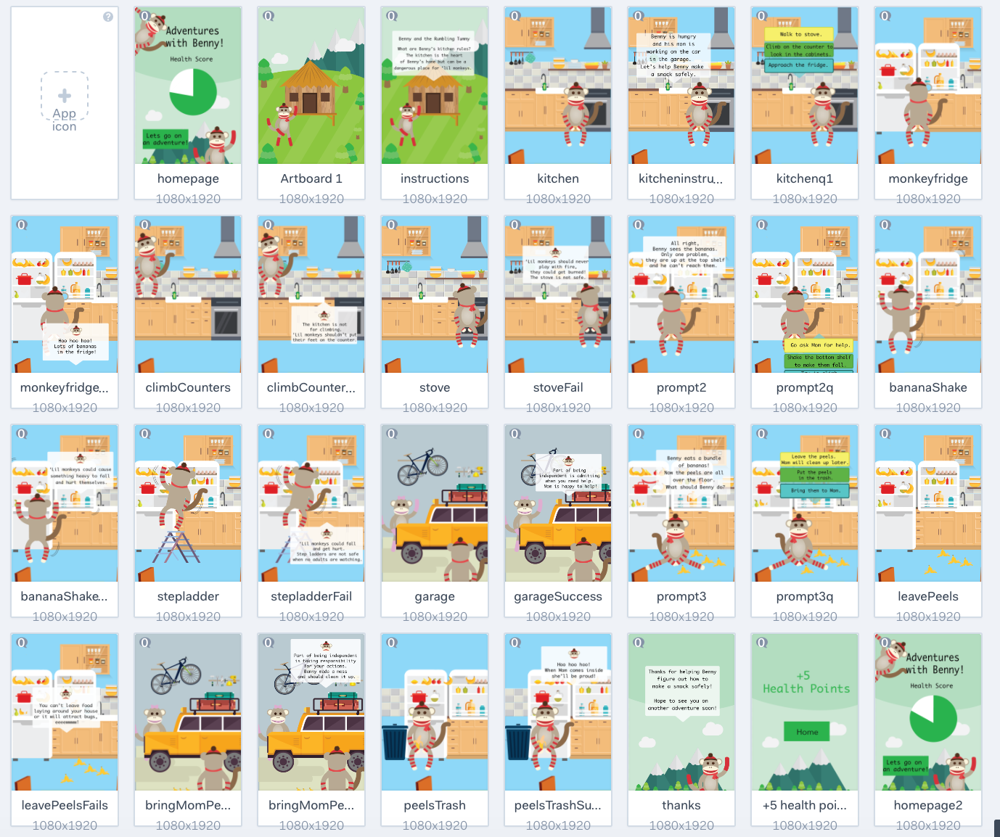

Week 4 Prototype-Interactive Story
The next step was to create the proof of concept for the interactive storybook. I started by creating all of the screens through Adobe Illustrator. I wanted to select simple colors and provide enough depth in the scenes to make them feel realistic.
After I had created all of the screens I uploaded them to Marvel. I used Marvel to create the "workable" prototype. I was able to create a simulation of different user interactions and functions through timers, and clickable areas.
User Testing
After completing a few user tests, I realized that if children made the wrong choice they didnt get to play out the rest of the story. This can be disheartening to users as they might feel like they had lost. The purpose of the product is to encourage learning in a gamified environment, so there shouldnt be scoring or losing.I also recieved feedback in class that the game should be compatible on ipads, as many children use them for entertainment.